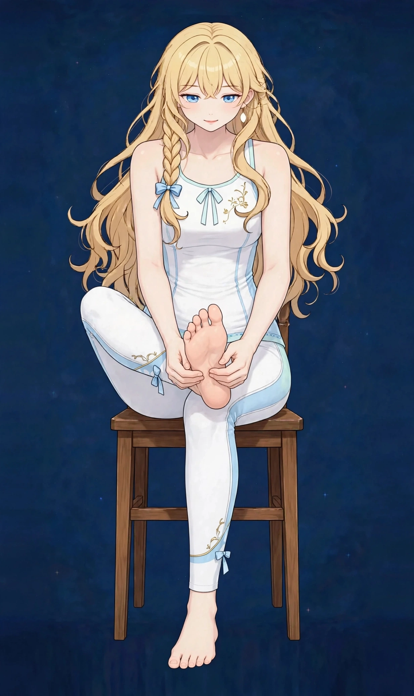

梅田で夕方・仕事帰りに気になる冷え感｜要因の整理とセルフケア、受診の目安ハウツー

梅田で働く・暮らす方へ。朝は気にならなかったのに、夕方や仕事帰りになると「手足が冷たい」「体が冷えたように感じる」と気になる冷え感について、一般的な解説と考えられる要因の整理、日常で取り入れられるセルフケア、医療機関への受診の目安をまとめました。一般的な健康情報としてお読みください。
#梅田 夕方 冷え#仕事帰り 冷え感#手足 冷たい 夕方#梅田 冷え サロン 仕事帰り#冷房 冷え 夕方 女性
夕方・仕事帰りに気になる冷え感とは（一般的な解説）
冷え感とは、手足の先や体全体が「冷たい」「温まりにくい」と感じる感覚を指す言葉です。実際に体温が低いかどうかとは別に感じられることもあり、感じ方には個人差が大きいとされます。朝や日中は気にならなかったのに、夕方や仕事を終えた帰り道になって、手先の冷たさや、体が芯から冷えたような感覚に気づく——そんな訴えは、働く女性からよく聞かれます。
夕方は、一日の過ごし方の影響が重なって表れやすい時間帯です。日中の冷房や姿勢、疲労の蓄積といった要素が少しずつ積み重なり、帰る頃に「今日は冷える」と感じやすくなると考えられます。この記事では、夕方・仕事帰りに気になる冷え感の一般的な解説と、背景として考えられる要因の整理からお伝えします。なお、冷え感だけで体の状態を判断することはできません。気になる変化が続く場合は、後半の「受診の目安」もあわせてご確認ください。
考えられる要因の整理
1つ目は、一日の動きの少なさです。デスクワークで座りっぱなしの日や、同じ場所に立ち続ける日は、ふくらはぎなど脚の筋肉を大きく動かす機会が少なくなりがちです。脚の筋肉は、動くたびにポンプのように巡りを支えるとされますが、その機会が減ると、夕方になって脚の重だるさと一緒に冷えを感じやすいと訴える方がいます。疲労そのものが一日分積み重なっていることも、夕方に感じやすい理由のひとつと考えられます。
2つ目は、冷房と寒暖差の積み重ねです。オフィスや電車の冷房に長い時間あたる日、薄手の服装の日は、首元や足元から少しずつ体が冷えていきやすいとされます。仕事帰りは外の気温も下がり始める時間帯で、日中に受けた冷えと重なって、帰り道で冷え感を自覚しやすくなる場合があります。季節を問わず、冷房の強い室内で過ごす時間が長い方ほど思い当たりやすい要素です。
3つ目は、緊張の続き方と生活リズムです。仕事の緊張が一日続いたあとは、体が休む方向へ切り替わりにくく、手足の末端まで温かさが届きにくいと感じることがあるとされます。昼食が軽かった、冷たい飲み物が続いた、眠りが浅い日が重なっている、といった日常の要素が重なる場合もあるとされます。東洋医学では、こうした夕方の冷え感を「気・血の巡り」の滞りとして捉えることもあり、脚の内側を流れる脾経や、冷えと関わりが深いとされる腎経のエリアとも重ねて考えられてきました。要因はひとつではなく、その日の働き方や服装、体調によって組み合わせが変わるため、「これが原因」と決めつけず、思い当たるものをひとつずつ見直すことが大切です。
冷えを感じやすい部位は、図1のとおりです。
図1｜冷えを感じやすい部位

日常で取り入れられるセルフケア
まずは、仕事終わりと帰り道の小さな工夫です。帰る前に椅子に座ったまま足首を回す、立った状態でかかとの上げ下げを数回行うなど、固まっていた脚を少し動かしてから帰るだけでも、夕方の過ごし方は変わります。ひと駅分歩く、階段を使うといった日常の歩行も、無理のない範囲であれば取り入れやすい方法です。首元をストールで覆う、靴下を重ねるなど、帰り道に備えて服装をひとつ足す工夫も基本になります。
帰宅後は「温める」ことです。湯船につかって脚全体を温める、時間がない日は足湯で足元だけでも温める、といった方法は、冷えた体をいたわる基本とされます。湯船の中でふくらはぎを下から上へ手のひらでさするのも、手軽なケアのひとつです。夕食では、温かい汁物や温かい飲み物を一品添えるなど、体の内側を冷やさない工夫も日常に取り入れやすいものです。
あわせて、眠るまでの時間に体を冷やしすぎないことも大切とされます。ただし、セルフケアはあくまで日常の冷え感への対処です。特定の食品や方法に頼りすぎたり、冷えを我慢して予定を詰め込みすぎたりしないようにしてください。疲れが強い日は、ケアよりもまず休むことを優先することも大切です。
冷えのケアで挙げられる代表的なツボは、図2のとおりです。
図2｜冷えケアで挙げられるツボの位置
受診の目安｜こんなときは医療機関へ
夕方の冷え感の多くは、一日の過ごし方や冷房、疲労の蓄積といった日常の要因が重なって感じられるとされますが、中には医療機関での確認を優先したいサインもあります。「片側の手足だけが強く冷える」「しびれや痛み、皮膚の色の変化を伴う」「冷えが日ごとに強くなっている」「発熱や体重の急な変化、動悸など、ほかの症状も伴う」「日常生活や仕事に支障が出るほどつらい」といった場合は、セルフケアで様子を見続けず、医療機関への受診をおすすめします。
また、冷えの背景には、貧血や甲状腺の働きなど、検査で初めて分かる要素が関係していることもあるため、気になる状態が続く場合は一度相談してみてください。当店のケアはリラクゼーションを目的としたボディケアで、冷えや病気を診断したり、それらに対応したりするものではありません。医療機関での確認を優先したうえで、日常のコンディションを整える選択肢のひとつとしてご利用ください。
当店でのケアとサロンのご案内
ステラポラリスは、大阪・梅田エリアのレンタルサロンで施術する女性専用・完全予約制のサロンです。営業は月〜土17:00〜22:00（日曜休み）で、仕事帰りの時間帯に合わせやすい設定です。施術はオイルマッサージと美容整体、料金は90分10,000円です。ご予約はLINE公式アカウント「ポラリス美容整体院」で受付中です。場所は大阪市北区堂山町12-5 ロイヤルハイツ梅田Ⅱ 303号室（レンタルサロンACE内）、中崎町駅から徒歩5分・阪急梅田駅から徒歩8分です。入室方法の詳細はご予約確定後にLINEでご案内します。
施術では、その日の体調や気になる部位をうかがい、脚やお腹まわりを含めた全身を順にほぐしながら、巡りを意識したケアを組み立てます。施術中は温かいオイルとタオルで体が冷えないよう配慮し、静かに休みたい日はその過ごし方も選べます。担当は施術歴30年・鍼灸師資格を持つセラピスト1名で、当店では鍼灸施術は行いません。関連するお悩みページ「冷え」「脚のむくみ」や、経絡ページ「腎経」「脾経」でも、体の見方やケアの考え方を紹介していますので、あわせてご覧ください。料金や営業時間の詳細は、このページ上部の料金ページ・店舗案内でもご確認いただけます。